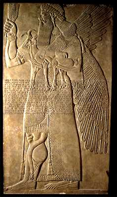

The Challenge -
Assyrian relief

This is a protective spirit, called an apkallu, from the palace of king Ashurnasirpal at Nimrud. It dates to around 870 B.C. Apkallu sculptures were set up at doorways or corners of rooms where it was thought evil spirits might be hiding. They magically protected the king and the palace from dangerous supernatural forces.
To learn more about the apkallu visit Palaces Explore.
|
|